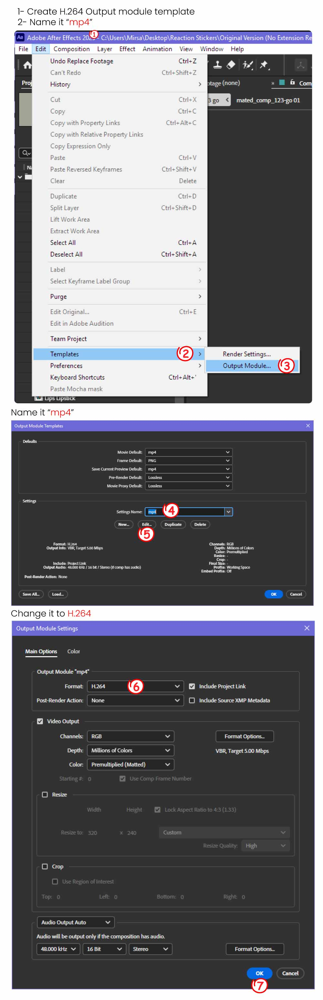
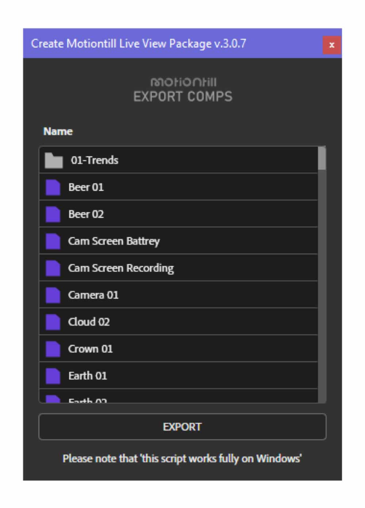

Convert your aftereffects projects package to a motiontill liveview extension - package
01 - Preparing
Convert your aftereffects projects package to a motiontill liveview extension - package
01 - Preparing
After downloading the script, create an output module named "mp4" with the format set to "H.264". If you need help, refer to the image below.
 02 - Select All Compositions and Folders 03 - Run the ScriptYou will see all the selected items ready for export as compositions.
04 - Click the Export Button Follow the instructions to choose a location for exporting all your files.
Note: There is a ".cmd" file included. If you want to generate previews and image previews, run this file and wait for it to render all items. If you don’t need it, feel free to delete the extra files.
For more information, check out the related video tutorial available via the link in the sidebar.